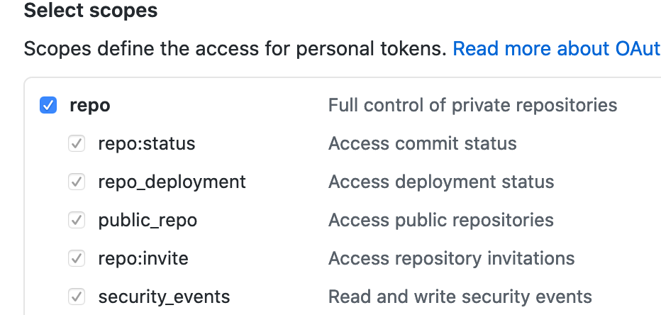

Mój setup wygląda tak: mam PC-ta z Windowsem i Lunuxem, oraz 2 MacBooki do pracy (bogactwo wiem) i rzadko używanego laptopa z linuxem. Utrzymanie ustawień IDE w takiej samej formie na wszystkich maszynach nie było wykonalne ręcznie. Często korzystając z jednego sprzętu, znajdowałem jakieś ustawienie lub plugin, który usprawniał pracę, a po przesiadce na inny sprzęt czegoś mi brakowało — ale nie zawsze pamiętałem czego. Można eksportować i importować ustawienia na innych maszynach, ale to jest dobre przy pierwszym ustawianiu nowego kompa, a nie przy codziennej pracy.
Dziś przez przypadek odkryłem settings repository.
I jest to dokładnie tym, co sugeruje nazwa — repozytorium dla ustawień, które synchronizuje lokalne zmiany ustawień między wszystkie maszyny korzystające z tego samego repo. Sprawdziłem to póki co na 2 komputerach i wygląda, jakby rozwiązało mój problem. Mam to samo repozytorium na ustawienia IntelliJ Idea i Android Studio, bo lubię mieć te same skróty klawiszowe, makra, codestyle itd. Póki co bez problemów, ale tak jak pisałęm, odkryłem to dzisiaj 
Jest jeszczae inna opcja synchronizowania ustawień w IntelliJ, przy użyciu oficjalnego pluginu od JetBrains — IDE Settings Sync IDE Settings Sync. Ale przy ocenie 2.1 na 5 i przewagą 1… ja zostaję przy settings repo.
Jak to ustawić
Zalecam zacząć od stworzenia nowego repozytorium na ustawienia na Githubie. I tak pewnie już masz tam konto, a jak nie to załóż — przyda Ci się. Od jakiegoś czasu na darmowym koncie repozytoria prywatne są dostępne bez ograniczeń, nie widzę powodu żeby kisić się na BitBuckecie albo GitLabie.
Po założeniu nowego repozytorium skopiuj adres HTTPS (ten sam co do klonowania)

W IntelliJ przejdź do File→Manage IDE Settings→Settings Repository, lub użyj CMD+Shift+A i wpisz settings repository jak jesteś leniwy/a jak ja.

Teraz wklej link z GitHuba i kliknij Override Remote - to będzie pierwszy commit na tym repozytorium więc i tak nie nadpiszesz żadnych ustawień.
IDE może zapytać Cię o login i hasło do GitHuba, ale bezpieczniej użyć access token który wygenerujesz sobie per komputer na stronie ustawień konta GitHub. Aby wygenerować nowy token, przejdź do account settings→Developer Settings→Personal Access Tokens i kliknij przycisk “Generate new token”.

Teraz najgorsze - wybór nazwy dla tokena. Jeśli Twoja maszyma ma na imię Anton (#PDK) to proponuję np. IDE settings - Anton żeby wiedzieć dla którego komputera został stworzony ten token i w razie wymiany Antona na nowszy model można go było łatwo usunąć. W Scopes ustawiamy tylko repo.

Po wygenerowaniu nowego tokena, za pomocą zielonego przycisku na dole, będziesz mieć jedyną okazję, żeby go skopiować. Kiedy wkleisz token do popupu w IntelliJ, powinno bez problemu wysłać Twoje ustawienia do repozytorium. Jeśli teraz sprawdzisz zawartość repo, zobaczysz pliki XML odpowiadające za ustawienia codestyle, układu kolorów, inspekcje, live templates i wiele innych. Będą tam także ustawienia pluginów, ale niestety nie sama ich lista — to nadal trzeba synchronizować manualnie na każdej maszynie.
Na każdym komputerze trzeba będzie powtórzyć krok z generowaniem tokana, nie chcesz używać tego samego na różnych sprzętach. Po wypchnięciu pierwszego commita na repo ustawień, na każdej kolejnej maszynie, którą będziesz chciał synchronizować wybierz raczej opcję override local albo najlepiej merge podczas dodawania repozytorium ustawień w IDE. Pozwoli to na merge Twoich obecnych ustawień z tymi zapisanymi w repo, ale mogą zdarzyć się konflikty 
Twoje ustawienia będą się synchronizować z repozytorium za każdym razem kiedy otwierasz i zamykasz IDE, lub przy każdym pushu zmian w projekcie (o ile robisz to z poziomu IDE). Możesz także wymusić synchronizację przez opcję VCS→Sync Settings→Merge.
Bonus (Nie testowałem tego)
Jest jeszcze opcja ustawienia dodatkowych źródeł ustawień do synchronizacji w trybie read-only, np. jeśli w Twojej organizacji macie ustalone live templates, szablony plików czy ustawienia deploymentu, ale nie powinny one być nadpisywane przez nikogo. Można to zrobić w Preferences→Tools→Settings Repository przez kliknięcie małego + na dole ekranu.